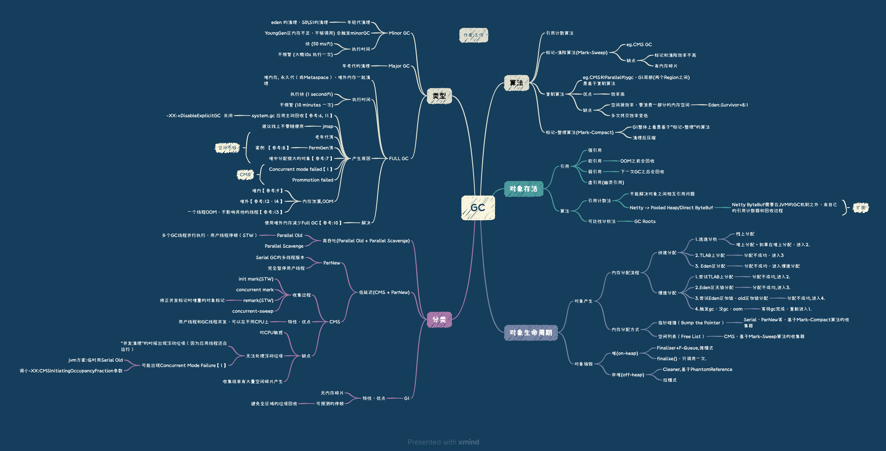

并发标记算法 #
- CMS： 三色标记算法 + 增量更新（Incremental update）
- G1： 三色标记算法 + STAB（snapshot-at-the-beginning） Java虚拟机 —-三色标记与G1垃圾回收器
参考： #
- 源码分析：Java对象的内存分配 iceAeterna
- 《深入理解Java虚拟机（第2版）》 第3章 周志明
- 深入理解GC ——MinorGC\MajorGC\FullGC 张硕的博客
- 触发JVM进行Full GC的情况及应对策略 yexx
- Netty之有效规避内存泄漏 江南白衣
- 周期性Full GC的异常排查 weiplex
- 一个大对象引起的血案，GC的踩坑实录 何锦彬
- 生产环境下持久带满导致FullGC，如何跟踪
- 又是一个程序员粗心的代码引起频繁FullGC的案例 微信公众号里的
- JVM初探- 使用堆外内存减少Full GC 菜鸟-翡青
- 我遇到tomcat 7 full gc频繁的问题 auzll
- 一次堆外OOM问题的排查过程 谢照东 占小狼的博客
- 美团三面：一个线程OOM，进程里其他线程还能运行么？ 孤独烟 Java技术驿站
- netty 堆外内存泄露排查盛宴 闪电侠的博客 netty的bug
- 线上故障排查(2) - Java应用故障之堆溢出OOM问题及排查方案 冯立彬 未